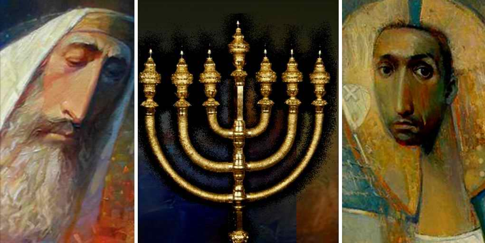

КАЖДЫЙ оставайся В СВОЕМ ЗВАНИИ
«Каждый оставайся в своем звании», иудеи - иудеями, а эллины - эллинами, как понять слова ап.Павла, следующие затем: «обрезание ничто и необрезание – ничто...» (1Кор.7:19)?
17 ... каждый поступай так, как Бог ему определил, и каждый, как Господь призвал. Так я повелеваю по всем церквам. 18 Призван ли кто обрезанным, не скрывайся; призван ли кто необрезанным, не обрезывайся. 19 Обрезание ничто и необрезание ничто, но [все] в соблюдении заповедей Божиих. 20 Каждый оставайся в том звании, в котором призван. 24 В каком [звании] кто призван, братия, в том каждый и оставайся пред Богом. (1Кор.7:16-24)
Если «каждый оставайся в своем звании», иудеи - иудеями (т.е., обрезанными), а эллины -эллинами (т.е., необрезанными), то как понять его слова, следующие затем: «обрезание ничто и необрезание – ничто, но [всё] в соблюдении заповедей Божьих» (1Кор.7:19)?
Обрезаться иудеям или таки уже не стоит, если это наше обрезание теперь НИЧТО!? Есть ли здесь противоречие? Как его разрешить?
Почему в одном месте Павел настаивает на обрезании для иудеев и необрезании для эллинов, ПОВЕЛЕВАЯ это по ВСЕМ ЦЕРКВЯМ?
Может быть так: он только временно велел оставаться иудеям в обрезании (ну-у-у, по немощи их) до наступления последнего времени? Так ведь он верил, что уже живет в самое последнее время.
Если вчитаемся еще раз, то вновь и вновь будем сталкиваться с настойчивым требованием Павла каждому оставаться в том звании, котором призван, как есть. Четырежды с завидным упорством он повторяет эту фразу – «кто кем призван, .. оставайся». Он настаивает на этом, выражая в форме повеления: «каждый поступай так, как Бог ему определил, и каждый, как Господь призвал. Так я ПОВЕЛЕВАЮ по ВСЕМ ЦЕРКВЯМ". (1Кор.7:17)
Возникает сомнение, будто Павел, говоря тогдашним иудеям одно, о грядущих - имел в виду нечто совсем другое (типа: сказал, но пальцы иксом в кармане держал, мол «два пишем, один в уме»...)?
Это мнимое противоречие можно разрешить, не обвиняя Павла в непоследовательности, разных уловках, хитрости т.п. Говоря «обрезание ничто и необрезание – ничто», он говорит иудеям: «В смысле достижения спасения - это не имется никакого значения! Ваше обрезание вас не приближает к Богу ни на йоту!», - и эллинам: «ваше необрезание не удаляет вас от Бога ни на йоту!» Т.е. в смысле приближения к Богу, нет ровным счетом никакого значения обрезан ли ты или нет. Обрезание и необрезание в этом смысле – НИЧТО! Никак не влияет на отношение и любовь, и милость Бога к вам!
Дальше говорит: «..но всё в соблюдении заповедей Божьих». Т.е. САМИ по СЕБЕ, ни обрезание, ни необрезание не имеют пред Богом ровно никакого значения! Что таки да ценно и важно для Него – наше послушание Его повелениям (заповедям).
И если Он сказал одним – обрезывайтесь! Это вам повеление вечное в роды ваши (Быт.17:9-11) : «И сказал Бог Аврааму: ты же соблюди завет Мой, ты и потомки твои после тебя в роды их. Сей есть завет Мой, который вы [должны] соблюдать между Мною и между вами и между потомками твоими после тебя: да будет у вас обрезан весь мужеский пол; обрезывайте крайнюю плоть вашу: и сие будет знамением завета между Мною и вами».
А другим велел – не обрезывайтесь (это повеление Дух Божий проговаривает через апостолов на соборе 52г. в Иерусалиме (см. Деян. 15). Значит, от одних Он ожидает обрезания, в послушание Его заповеди, а от других – необрезания в то же полушание. От каждого требуется послушание заповеди, а не споры о том, полезно ли обрезание и, если да, то почему - не всем?
Тут вспоминается место из ев. от Иоанна, где Иешуа говорит Петру, какою смертью он прославит Бога и "Петр, обратившись, видит идущего за ним ученика, которого любил Иешуа … Его увидев, Петр говорит Иисусу: Господи! а он что? Иисус говорит ему: если Я хочу, чтобы он пребыл, пока приду, что тебе [до того]? Ты иди за Мною" (Иоан.21:19-22).
Здесь важен принцип: одному Бог может повелеть умереть во славу Его, а другому – жить в Его же славу, одинаково любя и того и другого. Так что нас не должно смущать, почему одним так, а другим – иначе, а не всем поровну. Почему Дух Божий решил чрез апостолов о верующих из народов так, а об иудеях – иначе. «Обрезание ничто и необрезание ничто, но соблюдение заповедей Божиих».

- «Но как же, как же», - скажет внимательный исследователь Писания, сам Павел рассуждает о пользе, или бесполезности обрезания и приходит к однозначному выводу…
«Итак, какое преимущество [быть] Иудеем, или какая польза от обрезания?» (Рим.3:1)
Два вопроса о примуществе призвания и два ответа: почему обрезание имеет "преимущество во всех отношениях" и, с другой стороны - нет никакого преимущества, ведь "Иудеи, как и Еллины, все под грехом".
Заметим, что в каждом из утверждений Павел приводит потрясающие и не утрачивающие своё значение аргументы. Т.е. их никак не отменяют контр аргументы.
АРГУМЕНТЫ: Бог верен. Даже неверность и лживость человека не может отменить Его верность.
КОНТРАРГУМЕНТЫ: "делами закона не оправдается пред Ним никакая плоть" - т.е., если ты думаешь, что ты иудей (обрезанный) и тем думаешь оправдаться, продолжая грешить, знай: ты не имеещь никакого преимущества пред таким же грешником как и ты, только необрезанным. Твое обрезание никак не спасает тебя… и исполнение заповедей закона никак не приближает тебя к Богу.
Также, чтобы иудею исполнить свое призвание от Господа, великое преимущество в том, чтобы он исполнил всякое Его повеление, в т.ч. обрезание. Великое преимущество каждого из нас (вне важно, иудея или эллина) исполнить, как можно точнее повеления (заповеди) Божьи. Но нет никакого преимущества в обрезании, или необрезании, если посредством их пытаемся заслужить спасение, или заработать любовь. Спасение и любовь Божья – только по вере! Никакими делами мы не можем оправдаться перед Ним, только верой!
"Итак, какое преимущество [быть] Иудеем, или какая польза от обрезания? 2 Великое преимущество во всех отношениях, а наипаче [в том], что им вверено слово Божие. 3 Ибо что же? если некоторые и неверны были, неверность их уничтожит ли верность Божию? 4 Никак. Бог верен, а всякий человек лжив, как написано: Ты праведен в словах Твоих и победишь в суде Твоем.
***
9 Итак, что же? имеем ли мы преимущество? Нисколько. Ибо мы уже доказали, что как Иудеи, так и Еллины, все под грехом, 10 как написано: нет праведного ни одного; 11 нет разумевающего; никто не ищет Бога; 20 потому что делами закона не оправдается пред Ним никакая плоть; ибо законом познается грех. 21 Но ныне, независимо от закона, явилась правда Божия, о которой свидетельствуют закон и пророки, 22 правда Божия через веру в Иисуса Христа во всех и на всех верующих, ибо нет различия, 23 потому что все согрешили и лишены славы Божией, 24 получая оправдание даром, по благодати Его, искуплением во Христе Иисусе, 28 Ибо мы признаем, что человек оправдывается верою, независимо от дел закона. 29 Неужели Бог [есть Бог] Иудеев только, а не и язычников? Конечно, и язычников, 30 потому что один Бог, Который оправдает обрезанных по вере и необрезанных через веру. 31 Итак, мы уничтожаем закон верою? Никак; но закон утверждаем". (Рим.3:1-31)
***
В чем же причина требования Павла, чтобы иудеи продолжали обрезываться, а эллины не прикасались к обрезанию?
Когда Павел говорит здесь об обрезании одних и необрезании других, он имеет в виду ПРИЗВАНИЕ иудеев (обрезанных) и ПРИЗВАНИЕ эллинов (необрезанных).
Но как же, - скажет бдительный брат, ведь сказано в Кол.3:10-11:
"облекшись в нового, который обновляется в познании по образу Создавшего его,
11 где нет ни Еллина, ни Иудея, ни обрезания, ни необрезания, варвара, Скифа, раба, свободного, но все и во всем Христос". Также и Гал.3:28: «Нет уже Иудея, ни язычника...». – Правда! Но тогда уже дочитаем до конца: «...нет раба, ни свободного; нет мужеского пола, ни женского: ибо все вы одно во Христе Иисусе». Кто из трезвых и с традиционной ориентацией всерьез станет сегодня утверждать, что таки нет разницы между мужчиной и женщиной? Вы улыбнулись? – это хорошо.
Также иудей улыбается, когда ему начинают объяснять, что теперь он эллин. Конечно, в смысле спасения нет преимущества у мужчины перед женщиной. И его Бог не любит более, чем ее. И в этом смысле нет для Него ни того, ни другого. Но в смысле призвания, есть великая разница между мужем и женой. И слава Создателю за эту разницу!
Итак, у мужа, и у жены, у иудея, и у эллина есть свое призвание. У тех и других оно прекрасно, ценно, важно пред Творцом! Отец, взирает на своих детей, таких разных, но от того ни сколько не менее любимых. Он желает нам счастья. Чтоб мы исполнили КАЖДЫЙ СВОЁ ПРИЗВАНИЕ, предназначение, то, для чего Он привел (родил) нас в этот мир. И каждого Он наделил своими, присущими только ему дарами…
***
Об отношении в теле Мессии Израиля и Церкви см. также "Шуламит. Танец Двух ополчений"
автор Эфраим Калиш /TORAART/